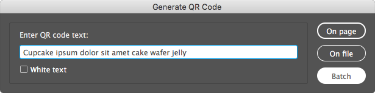

Indentz
Colecție de scripturi InDesign pentru operații simple și repetitive. O bună parte dintre ele sunt gândite să fie rulate printr‑un shortcut (sugestii sub fiecare secțiune). Câteva pot fi rulate în scriptul batch_convert.jsx de Peter Kahrel.
Descriere
Alignment/Proxy
-
AlignTo aliniază obiectele selectate la referința setării Align To:

-
ToggleAlignTo.jsx comută alinierea între obiect, margini, pagină sau spread (rulați scriptul în mod repetat).
-
ResetAlignTo.jsx o resetează la Align to Selection.
-
SetRefPoint schimbă punctul de referință pentru transformări, similar cu selectarea pătrățelelor proxy în paleta Transform.
Notă: Ambele seturi ar trebui alocate tastaturii numerice.
Shortcut‑uri
| Alignment |
|
|
|
|
|
|
|
AlignToTL.jsx |
Num7 |
AlignToT.jsx |
Num8 |
AlignToTR.jsx |
Num9 |
ToggleAlignTo.jsx |
Num0 |
AlignToL.jsx |
Num4 |
AlignToC.jsx |
Num5 |
AlignToR.jsx |
Num6 |
ResetAlignTo.jsx |
⌃Num0 |
AlignToBL.jsx |
Num1 |
AlignToB.jsx |
Num2 |
AlignToBR.jsx |
Num3 |
|
|
| Proxy |
|
|
|
|
|
SetRefPointTL.jsx |
⌃Num7 |
SetRefPointT.jsx |
⌃Num8 |
SetRefPointTR.jsx |
⌃Num9 |
SetRefPointL.jsx |
⌃Num4 |
SetRefPointC.jsx |
⌃Num5 |
SetRefPointR.jsx |
⌃Num6 |
SetRefPointBL.jsx |
⌃Num1 |
SetRefPointB.jsx |
⌃Num2 |
SetRefPointBR.jsx |
⌃Num3 |
Fitting
-
FitToPage redimensionează unul sau mai multe obiecte selectate, fără să le scaleze: dacă obiectul este mai mare decât pagina/marginile/bleed‑ul, va fi redus; dacă este mai mic dar intră într-o zonă „snap” de 5%, va fi mărit. Frame‑urile obișnuite sunt redimensionate pur și simplu. Pentru a nu le deforma, obiectele rotite, ovalurile, grupurile etc sunt incluse într‑un container (clipping frame) și acesta e redimensionat. FitToSpread fac același lucru pentru paginile grupate într‑un spread.
FitTo...Forced.jsx redimensionează exact la dimensiunile respective.
-
TextAutosize.jsx „strânge” chenarul la text și îi setează dimensionarea automată. Controlați referința pentru dimensionarea automată setând Paragraph Alignment pentru axa orizontală și Text Frame Options > Vertical Justification pentru axa verticală:
Dacă textul are un singur rând, Auto-Sizing Type va fi setat Height and width. Dacă are mai multe rânduri, prima rulare îl va seta Height only, a doua Height and width.
Shortcut‑uri
| FitToPage |
|
FitToSpread |
|
TextAutosize |
|
FitToPage.jsx |
F11 |
FitToSpread.jsx |
F12 |
TextAutosize.jsx |
F6 |
FitToPageMargins.jsx |
⌥F11 |
FitToSpreadMargins.jsx |
⌥F12 |
|
|
FitToPageBleed.jsx |
⇧F11 |
FitToSpreadBleed.jsx |
⇧F12 |
|
|
FitToPageBleedForced.jsx |
⇧⌘F11 |
FitToSpreadBleedForced.jsx |
⇧⌘F12 |
|
|
Scaling
Acestea scalează proporțional unul sau mai multe obiecte selectate, ca un bloc unitar.
-
ScaleToPageSize.jsx și ScaleToPageMargins.jsx scalează la dimensiunile paginii sau marginii.
-
Variantele H (height) și W (width) scalează la înălțimea, respectiv lățimea paginii sau marginii.
Shortcut‑uri
| Scale |
|
ScaleToPageSize.jsx |
F5 |
ScaleToPageMargins.jsx |
⌥F5 |
Print
Fac câteva pregătiri pentru export și pot fi rulate în batch_convert.jsx. Detectează layere alternative gen visible, vizibil pentru safe area, sau diecut, die cut, cut lines, stanze pentru dielines.
-
PrepareForPrint.jsx ascunde layerul safe area și mută ștanțele și marcajele pentru alb și lac UV de pe dielines / white / varnish pe spreaduri separate.
-
SafeArea.jsx creează un frame de dimensiunea marginilor paginii pe layerul safe area. Folosește swatch‑ul Safe area, care dacă nu există va fi creat cu valoarea C=0 M=100 Y=0 K=0.
-
SafeAreaHideLayer.jsx și SafeAreaShowLayer.jsx ascund sau afișează safe area.
Setup
-
DocCleanup.jsx șterge culorile, layerele și paginile neutilizate, deblochează toate elementele, le resetează scalarea la 100% și setează câteva preferințe:
Rulers: Reset Zero Point
Rulers Units: Millimeters
View: Show Rulers
View: Show Frame Edges
Document Intent: Print
Transparency Blend Space: CMYK
CMYK Profile: ISO Coated v2 (ECI)
RGB Profile: sRGB IEC61966-2.1
Grids & Guides: Show Guides
Grids & Guides: Unlock Guides
Guides & Pasteboard: Margins: H 150 mm, V 25 mm
Guides & Pasteboard: Preview Background: Light Gray
Keyboard Increments: Cursor Key: 0.2 mm
Keyboard Increments: Size/Leading: 0.5 pt
Keyboard Increments: Baseline Shift: 0.1 pt
Keyboard Increments: Kerning/Tracking: 5/1000 em
Pages: Allow Document Pages to Shuffle
Layers: Ungroup Remembers Layers
Layers: Paste Remembers Layers
Transform Reference Point: Center
Type Options: Use Typographer's Quotes
Type Options: Apply Leading to Entire Paragraphs
-
DocDefaults.jsx creează câteva culori speciale și layere, înlocuiește niște fonturi și setează dimensiunea și marginile paginii din numele fișierului. De fapt rulează unele dintre scripturile de mai jos și setează preferințele la fel ca DocCleanup.jsx.
-
DefLayers.jsx creează un set de layere, preluându‑le proprietățile din DefLayers.txt, care este un fișier TSV (tab-separated values) cu 6 coloane cu următorul format:
| Nume |
Culoare |
Vizibil |
Printabil |
Ordine |
Variante |
| dielines |
Magenta |
TRUE |
TRUE |
top |
cut, cut lines, decoupe, die, die cut, stanze |
| template |
Gray |
FALSE |
FALSE |
bottom |
|
| ... |
|
|
|
|
|
Nume: numele layerului
Culoare: culoarea layerului (v. UIColors.txt)
Vizibil: TRUE sau FALSE
Printabil: TRUE sau FALSE
Ordine: top sau bottom (deasupra sau sub layerele existente)
Variante: o listă de layere care vor fi combinate cu layerul de bază (case insensitive)
DefLayers.xlsx vă va ajuta la generarea fișierului TSV.
Note: Prima linie (capul de tabel) și liniile care încep cu ; sunt ignorate.
-
DefSwatches.jsx creează un set de swatch‑uri definite în DefSwatches.txt, un fișier TSV cu 3 coloane cu următorul format:
| Name |
Model |
Values |
| Rich Black |
process |
60, 40, 40, 100 |
| Cut |
spot |
0, 100, 0, 0 |
| ... |
|
|
Name: numele swatch‑ului
Model: color model: process or spot
Values: o listă de 3 (RGB) sau 4 (CMYK) valori
-
CleanupSwatches.jsx convertește swatch‑urile RGB la CMYK, elimină duplicatele, le redenumește după formula C= M= Y= K= și le șterge pe cele nefolosite. Culorile spot rămân neschimbate.
-
ReplaceFonts.jsx înlocuiește fonturi utilizând o listă de substituție, ReplaceFonts.txt, care este un fișier TSV cu 4 coloane cu următorul format:
| Font vechi |
Stil |
Font nou |
Stil |
| Arial |
Regular |
Helvetica Neue |
Regular |
| Arial |
Bold |
Helvetica Neue |
Bold |
| ... |
|
|
|
Notă: Puteți utiliza ShowFonts.jsx din Misc pentru a obține o listă a fonturilor pentru copy‑paste.
-
PageMarginsFromSelection.jsx setează marginile paginii la dimensiunile selecției.
-
PageSizeFromFilename.jsx setează dimensiunea și marginile paginii preluând informațiile din numele fișierului:
| Fișier |
Dimensiune |
Safe area |
Bleed |
File1_1400x400_700x137_5mm_QR.indd |
1400x400 |
700x137 |
5 |
File2_597x517_577x500.5_3mm V4_QR.indd |
597x517 |
577x500.5 |
3 |
Caută în numele fișierului perechi de numere de genul 000x000 (unde 000 înseamnă un grup de cel puțin o cifră, urmată sau nu de zecimale, și opțional de mm sau cm). Dacă găsește doar o pereche, aceasta va fi dimensiunea paginii. Dacă găsește două (de ex. 000x000_000x000), perechea mai mare va fi dimensiunea paginii, iar perechea mai mică dimensiunea ariei vizibile. Dacă sunt urmate de o secvență de una sau două cifre, aceasta e considerată bleed.
-
PageSizeFromMargins.jsx redimensionează fiecare pagină la marginile acesteia.
-
PageSizeFromSelection.jsx redimensionează pagina curentă la obiectele selectate (similar cu Artboards > Fit to Selected Art din Illustrator).
Shortcut‑uri
| Setup |
|
|
|
DocCleanup.jsx |
F2 |
PageSizeFromFilename.jsx |
F3 |
DocDefaults.jsx |
⌥F2 |
PageSizeFromMargins.jsx |
⌥F3 |
CleanupSwatches.jsx |
⇧F2 |
PageSizeFromSelection.jsx |
⇧F3 |
Misc
-
CleanupLabels.jsx: uneori se refolosesc obiecte care au o etichetă atașată (Script Label), și asta poate crea probleme ulterior. Scriptul șterge toate etichetele obiectelor selectate sau din întregul document dacă nu e selectat nimic.
-
Clip.jsx: Pentru a manipula unele obiecte poate fi uneori util să le inserăm temporar într‑un container (clipping frame). Scriptul inserează obiectele selectate într‑un container sau le restaurează dacă sunt deja inserate.
ClipUndo.jsx restaurează unul sau mai multe obiecte simultan.
-
PageRatios.jsx calculează rația fiecărei pagini și o afișează în colțul din stânga sus, pe layerul info.
-
QR.jsx adaugă coduri QR în documentul activ sau creează fișiere separate într-un subfolder numit QR Codes.
Mai întâi caută în folderul curent un document TSV cu 2 coloane numit QR.txt, din care preia o listă de coduri și fișierele corespunzătoare:
| Filename |
Code |
| File 1 |
CODE 1 |
| File 2 |
CODE 2 |
| ... |
|
Dacă nu‑l găsește, solicită codul și îl adaugă pe fiecare pagină în colțul din stânga jos, sau îl salvează într‑un fișier cu numele documentului activ și _QR adăugat la coadă:

Notă: Puteți insera | pentru împărțirea manuală a legendei în mai multe rânduri.
-
ShowFonts.jsx afișează toate fonturile utilizate în documentul curent (util pentru ReplaceFonts.jsx).
-
ShowProfiles.jsx afișează toate profilele de culori disponibile (util când credeți că aveți instalat un profil de culoare).
-
ShowProperties.jsx afișează proprietățile și metodele unui obiect selectat (util pentru depanare).
-
ZoomToSelection.jsx e asemănător cu Fit Selection in Window (⌥⌘=), dar cu câteva îmbunătățiri:
- aduce selecția puțin mai aproape;
- dacă cursorul e în text, face zoom la întreg cadrul;
- fără nimic selectat face vizibil întreg spreadul.
Shortcut‑uri
| Misc |
|
|
|
Clip.jsx |
Num* |
QR.jsx |
F9 |
ClipUndo.jsx |
⌃Num* |
ZoomToSelection.jsx |
F4 |
Instalare
- Deschideți Window > Utilities > Scripts.
- Faceți clic dreapta pe folderul User și selectați Reveal in Finder/Explorer.
- Copiați fișierele în acest folder.
Licență
Codul este publicat sub licența MIT (LICENSE.txt).
Raportați o problemă pe Github dacă întâmpinați dificultăți sau aveți sugestii.
README-ro.md • 9 noiembrie 2020